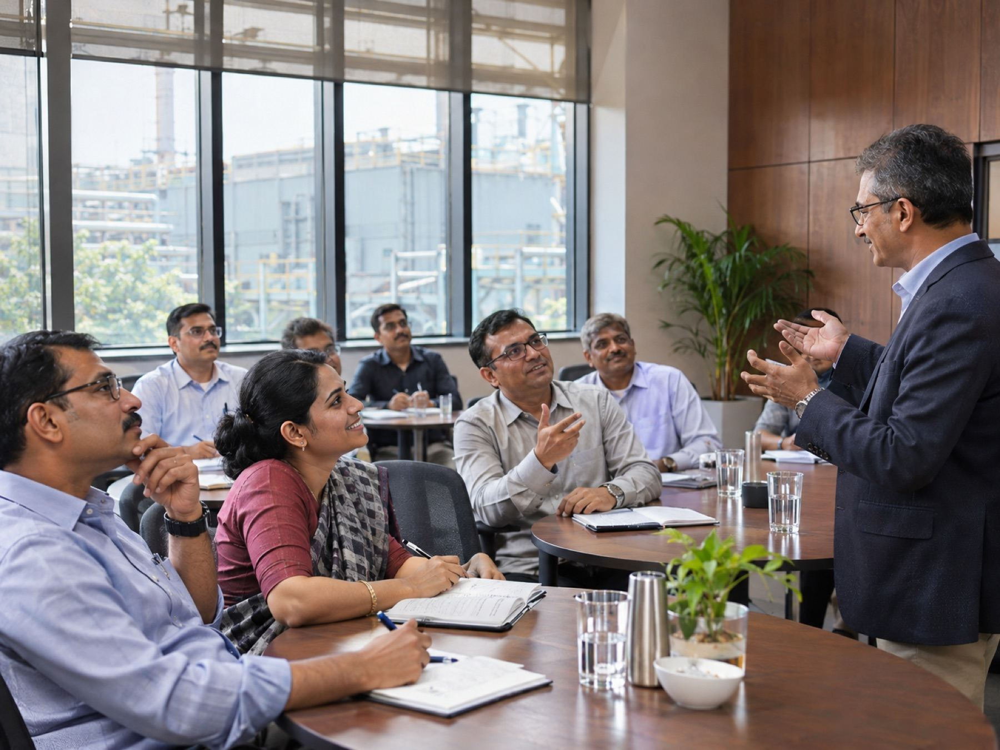
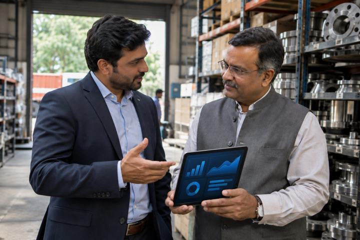

Industrial Selling
When Your Customer's Production Line Stops Because of Your Product
 Ajit Jain · 2 min read
Ajit Jain · 2 min read

Few situations test a supplier relationship more severely than a production stoppage linked to its product. The customer is under pressure, production losses may be mounting and several departments want answers. The salesperson may feel defensive, but this is the moment when the organisation's credibility matters most.
Respond quickly and bring the right technical and quality people into the discussion. First help the customer stabilise the situation and understand the immediate risk. Avoid arguing about responsibility before the facts are known. Preserve samples, batch details and process information so the issue can be investigated properly.
Communicate clearly about what is known, what is still being checked and when the next update will come. Once the cause is established, agree on corrective and preventive actions and verify that they work.
Do not treat the matter as closed simply because replacement material has been supplied. Follow up with the customer and review what the organisation must improve.
The takeaway
Trust is not built by claiming that problems never happen. It is built by taking responsibility for a fair, timely and effective response.
Facing this in your business? Our Sales Effectiveness & Growth Acceleration intervention can help.
Related insights
Explore all insights
When Your Product Is Technically Better but the Customer Still Chooses the CompetitorIndustrial Selling · 2 min read How to Sell a Product That the Customer Does Not Want to ChangeIndustrial Selling · 2 min read
How to Sell a Product That the Customer Does Not Want to ChangeIndustrial Selling · 2 min read When the Production Head Wants Your Product but the Purchase Department Rejects Your PriceIndustrial Selling · 2 min read
When the Production Head Wants Your Product but the Purchase Department Rejects Your PriceIndustrial Selling · 2 min read How to Convert a Trial Order Into a Regular Business RelationshipIndustrial Selling · 2 min read
How to Convert a Trial Order Into a Regular Business RelationshipIndustrial Selling · 2 min read